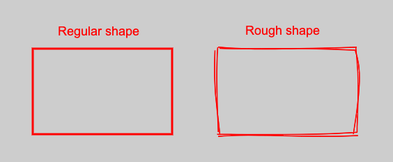

I started this project some time ago, just to test an idea and now I want to share it with everyone :)
For my ImgReview app, I wanted to use custom shapes with a hand-drawn, sketchy appearance. They look great and add a unique touch to your work:

This sketchy, hand-drawn look can be achieved using a small library called rough.js. It has no dependencies and works right out of the box.
I’m already using Konva as my main graphics library because it simplifies working with the canvas.
So, the goal was to get rough.js and Konva to play nicely together. Both libraries rely on a canvas reference, but their approaches differ and can clash.
Here’s what each brings to the table:
But here's the catch: you can't just do this and expect things to work seamlessly:
const roughCanvas = rough.canvas(document.getElementById('myCanvas'));
Shapes drawn this way are disconnected from Konva's lifecycle. You'd have to manually implement everything: click handling, redrawing, dragging, transformation-you name it. And I definitely didn't want that.
Thankfully, Konva offers a solution. It provides a Shape wrapper that lets you implement custom drawing logic via the sceneFunc method.
Here’s a basic example from their docs:
const customShape = new Konva.Shape({
x: 5,
y: 10,
fill: 'red',
sceneFunc(context, shape) {
context.beginPath();
context.moveTo(200, 50);
context.lineTo(420, 80);
context.quadraticCurveTo(300, 100, 260, 170);
context.closePath();
context.fillStrokeShape(shape);
},
});
It’s important to use the context provided by sceneFunc instead of trying to grab it yourself-otherwise, you’ll get weird results.
Here’s the high-level approach I used:
rough.js canvas reference (this.#roughCanvas) so I could generate the path of the shape.sceneFunc() method, I generated the path. This avoids regenerating it every time Konva redraws.rough.js doesn’t let you pass in a custom context, I built a separate roughService that knows how to draw the generated path on a given context.Here’s a snippet from my implementation:
class RectRough extends Rect {
type = EShapeTypes.RECT_ROUGH;
readonly #roughCanvas;
#lastDrawable;
#isDragging: boolean = false;
#isScaling: boolean = false;
shape: Konva.Shape;
constructor(props: TRectProps) {
super(props);
this.#roughCanvas = rough.canvas(document.querySelector(`.${SHAPES_LAYER_CLS}`));
}
defineShape() {
this.shape = new Konva.Shape({
x: this.props.x || 0,
y: this.props.y || 0,
width: this.props.width || 0,
height: this.props.height || 0,
stroke: this.props.stroke,
strokeWidth: this.props.strokeWidth / 2,
fill: 'transparent',
draggable: true,
sceneFunc: (context, shape) => {
const selected = this.isSelected() && !this.#isDragging;
if (selected || !this.#lastDrawable || this.#isScaling) {
this.#lastDrawable = this.#roughCanvas.generator.rectangle(
0,
0,
shape.getWidth(),
shape.getHeight(),
{
roughness: ROUGHNESS,
stroke: shape.getStroke(),
}
);
this.#isScaling = false;
}
roughService.draw(context, this.#lastDrawable);
context.fillStrokeShape(shape);
},
});
}
}
You can check out the full example here: RectRough.ts.
By the way, I didn’t write roughService from scratch-I borrowed the implementation from rough.js. The library uses the context under the hood; it just doesn’t expose an API for it.
You might also be interested in the following posts:
I started this project some time ago, just to test an idea and now I want to share it with everyone :)
I started to experiment with react-snap - a nice tool for creating pre rendered html of your SPA. The reason is fairly simple - I want to increase visibility of ImgReview by search engines.